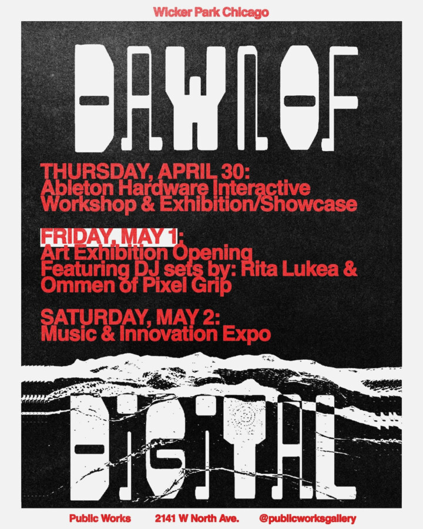

DAWN OF DIGITAL
Join us for the grand opening of DAWN OF DIGITAL—a gallery installation and sensory experience at Public Works Gallery.
Opening Friday May 1st 7-11pm feat DJ sets by: @ritalukea & @ommen of @_pixelgrip_
To kick off the months long installation, we’re hosting a three-day event series celebrating the evolution of digital innovation, visual culture, and sonic history.
From cracked pixels to crashed software, this is a tribute to the stubborn magic of making art with machines that break promises. ️
Here is the lineup:
FRIDAY, MAY 1 | 7PM – 11PM
“Dawn of Digital” Art Exhibition Opening
Art opening & party! The subtitle “Inconvenient Electronics & Things Made With Machines That Didn’t Want To” says it all. Running throughout the summer at Public Works Gallery. Featuring art and design from @someoddpilot, music from @someoddpilotrecords, and apparel drops. DJ sets by: @ritalukea & @ommen of @_pixelgrip_. (The night before)